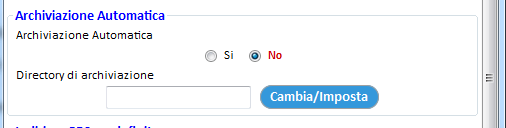
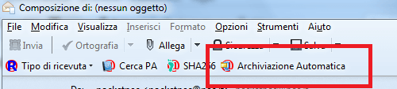
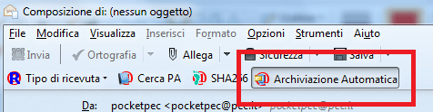
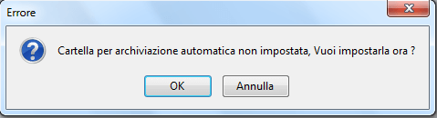
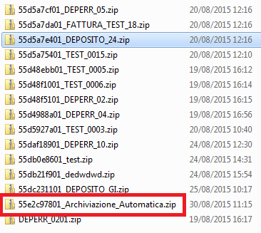
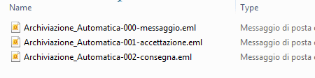
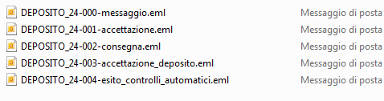
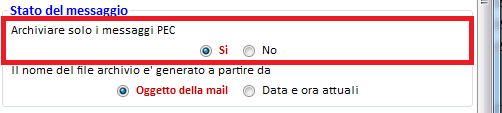
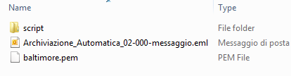
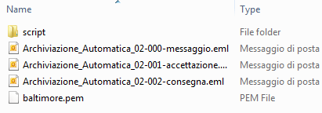

La funzionalità di archiviazione di ThunderPEC, collegata alla finestra Stato del messaggio, permette di creare un archivio ZIP contenente un messaggio di posta certificata e tutte le relative ricevute e/o messaggi collegati (ad esempio, nel caso di un deposito PCT, l’archivio ZIP contiene il messaggio inviato, le notifiche PEC di ACCETTAZIONE e CONSEGNA e le due ricevute PCT di ESITO CONTROLLI ed ACCETTAZIONE). L’operazione di archiviazione è manuale in quanto dobbiamo verificare la completezza delle informazioni attraverso la finestra Stato del messaggio per poi procedere alla creazione dell’archivio consistente e completo attraverso il pulsante Archivia della finestra.
Da questa versione, alla modalità descritta, si affianca la procedura di archiviazione automatica in cui possiamo decidere di procedere all’archiviazione già in fase di invio del messaggio PEC. Una volta attivata la funzionalità, ThunderPEC provvederà ad inserire nell’archivio ZIP i messaggi di posta certificata collegati automaticamente al loro arrivo. Ad esempio, nel caso di un deposito PCT
L’intervallo di tempo tra un passo ed il successivo, che può essere anche di diversi giorni, è ininfluente .
Il processo descritto è valido anche per un flusso di messaggi relativo alla FatturaPA o per un messaggio PEC normale (in pratica, per tutte le tipologie di messaggi gestite all’interno della finestra Stato del messaggio).
Le preferenze associate alla funzionalità di Archiviazione automatica sono disponibili all’interno della finestra delle Impostazioni di ThunderPEC in cui possiamo decidere se la funzionalità è sempre attiva e la cartella in cui ThunderPEC inserirà gli archivi ZIP

Il pulsante per Archiviazione automatica è presente nella finestra di composizione di un nuovo messaggio, all’interno della toolbar personalizzata di ThunderPEC. La figura evidenzia lo stato del pulsante se l’archiviazione automatica non è attiva

La figura seguente mostra lo stato del pulsante quando l’archiviazione automatica è attiva

Nel caso in cui abbiamo dimenticato di definire la cartella per l’archiviazione automatica, premendo il relativo pulsante, per l’attivazione della funzionalità sul messaggio che si sta per inviare, ThunderPEC chiede di indicare la cartella di destinazione degli archivi

A questo punto, ThunderPEC crea l’archivio ZIP che inserisce nella cartella che abbiamo indicato

All’interno dell’archivio, verranno inseriti i messaggi di posta certificata associati


Il contenuto dell’archivio ZIP è legato al flag presente nella finestra delle Impostazioni e relativo alla funzione Stato del messaggio.

Se abbiamo selezionato di archiviare i soli messaggi PEC, l’archivio ZIP conterrà i soli messaggi in formato EML; altrimenti, l’archivio conterrà anche il certificato di Baltimore (da cui sono originati i certificati digitali dei gestori PEC) e la cartella script per la gestione dei certificati scaduti (le figure seguenti mostrano il contenuto dell’archivio ZIP all’invio del messaggio e dopo la ricezione delle notifiche PEC)

